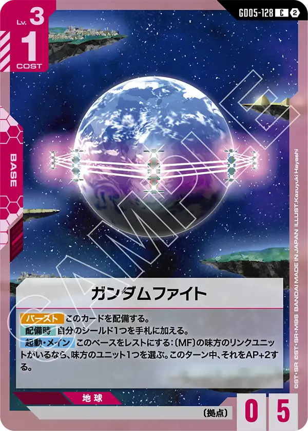
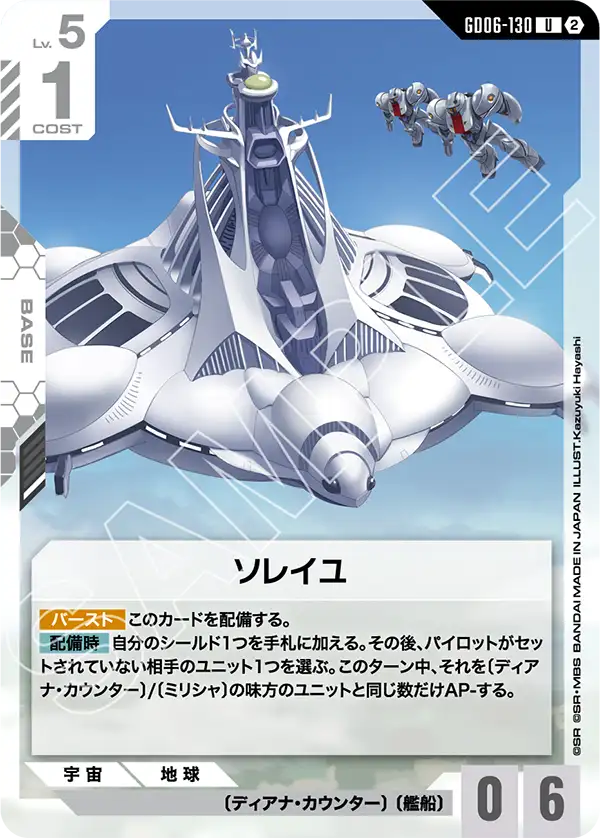
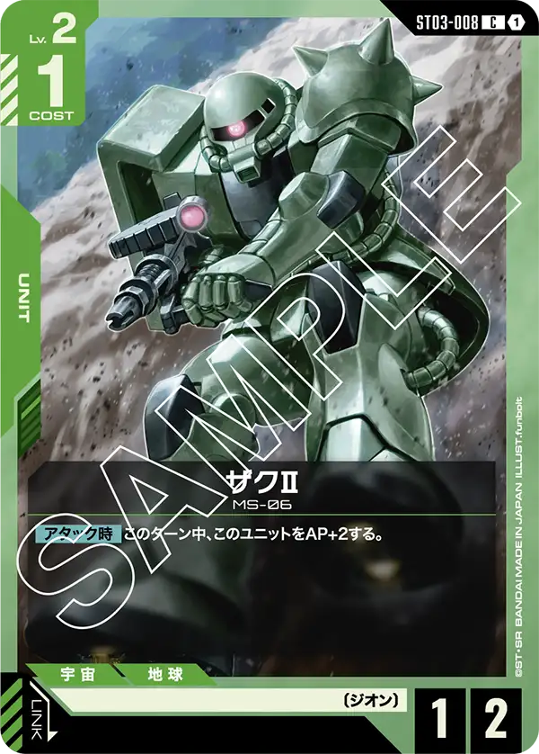
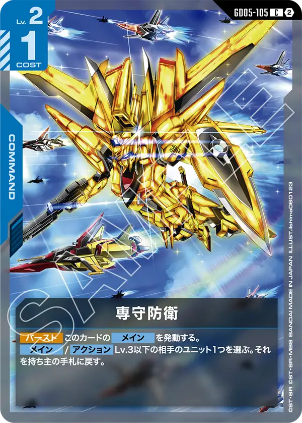
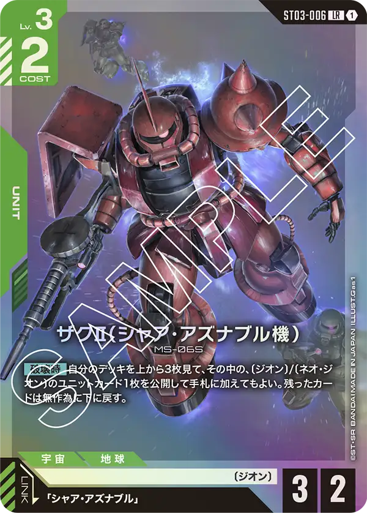
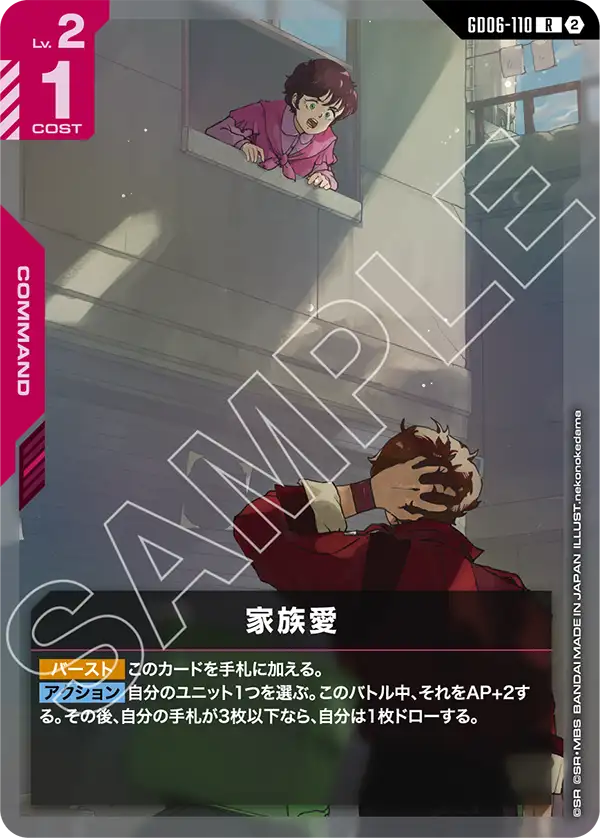
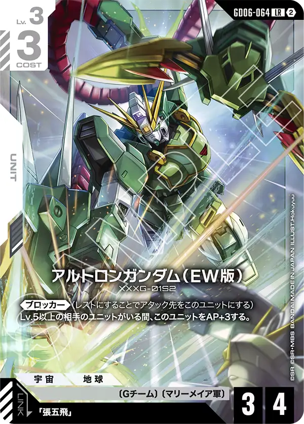

11/16〜11/22に開催された44大会の入賞448デッキを、前週（11/9〜11/15・55大会・512デッキ）と比べた。対象はNTC MISSION5 11月。入賞デッキは大会結果に順位が載ったデッキすべてで、上位4位だけを使う相性表とは母数が違う。
デッキカラー別の入賞割合
| デッキカラー | 前週 | 今週 | 差 |
|---|---|---|---|
| ↗ 赤/白 | 31.8% (163) | 34.6% (155) | +2.8pt |
| ↗ 青/白 | 18.0% (92) | 21.9% (98) | +3.9pt |
| → 青/緑 | 17.6% (90) | 17.4% (78) | −0.2pt |
| → 緑/紫 | 14.3% (73) | 13.2% (59) | −1.1pt |
| ↓ 青/赤 | 9.8% (50) | 4.9% (22) | −4.9pt |
| → 青/紫 | 2.7% (14) | 3.3% (15) | +0.6pt |
| → 緑/白 | 1.8% (9) | 2.7% (12) | +0.9pt |
| ↘ 赤/紫 | 3.1% (16) | 1.3% (6) | −1.8pt |
| → その他（2種） | 1.0% (5) | 0.7% (3) | −0.3pt |
矢印は前週からの割合の差で、↑ +4pt以上、↗ +1.5pt以上+4pt未満、→ −1.5pt超+1.5pt未満、↘ −4pt超−1.5pt以下、↓ −4pt以下。
デッキカラーごとの採用カード
採用率は、そのデッキカラーの入賞デッキのうちそのカードを1枚以上入れた割合。急上昇は、両方の週で30デッキ以上あるデッキカラーで、採用率が10pt以上上がったカードのうちいちばん上がった1枚。
赤/白 ↗（155デッキ）



先週に続きガンダムファイト[GD05-128]の採用率が伸びる形になった。
先週までは35%近い採用率だったが、1週間すぎると54%まで上昇する形になった。
条件付きではあるがAPを2上げる効果が状況にもよるが毎ターン利用できることを考えると性能としては破格といえる
HPが5と言うことでフルで投入されているわけでは無いが、1枚の採用でも十分カードとしての仕事はできる。
赤白でまとめているが、赤白学園やZZのデッキも入賞をしているが、トータルで言うとMFの勝率が凄まじい状態になっている。
プレイ難易度は高いが、使いこなせると非常に安定性も再現性も高いデッキのため今後も高い勝率を誇る形になるだろう
どのプレイヤーもこのデッキの対策を研究しているはずだが、この勝率は素晴らしいと言えよう
青/白 ↗（98デッキ）


白で実質初めてHP6ベースのソレイユ[GD06-130]が急上昇となった。
もともと、ある一定の評価は得ていたカードだが日が経つに連れてHP6であることはやはり強かったということなのだろう
普段はHP6のベースと言うことだけで評価はある程度得られるのだが、追加の効果のAPを下げる効果もこのデッキならある程度利用することができるのでバーストで配備されたときに相手の想定を崩すこともできる可能性があることも評価につながっているのだと思われる。
青/緑 →（78デッキ）



専守防衛[GD05-105]は以前も紹介したカードでアグロデッキに採用することもできる対アグロカードと言うカードになっている。
青緑は基本νガンダムを中心に添えたデッキが多いが、このカードはνガンダムを採用していない4弾までの基本形のアグロ型デッキに多めに採用されている傾向にある。
序盤のテンポを自身で取るために攻撃数で稼ぐのでは無く、多少攻撃数が少なくなっても盤面を開けたほうがトータルでは良いと言う判断で採用されているのだと思われる。
青が入るデッキの一部には採用がされているのでアグロが流行ったときの対抗策として十分使えることは覚えておきたい。
緑/紫 →（59デッキ）


ザクⅡ[GD01-035]が急上昇に入っている。先週はギャン（ハクジ装備）（GQ）[GD06-062]が急上昇に入っていたことを見ると今までより序盤に据えた状態にデッキの中身が切り替わりつつもステータスがある一定必要と言う事がデッキ利用者の中で共有されているのでは無いかと思われる。
変に効果を持ってステータスが下がるぐらいなら効果が無くてもいいのでしっかりと戦えるステータスが欲しい状態にあるのだろう。
紫や緑のカードの効果は良いものを持っているので無理して効果を持つユニットを採用するのでは無く、最小限だけ効果を持つユニットを採用して後はステータスで殴る状態になっているのだろう。
このデッキカラーは以前も書いた通り、序盤から終盤で様々なレンジをもたせる事ができるので対戦するときはそのデッキがどのレンジのデッキなのか見極めて戦いたい。
青/赤 ↓（22デッキ）

青/紫 →（15デッキ）


緑/白 →（12デッキ）

赤/紫 ↘（6デッキ）

運営のひとこと
GD06は目立つようなカードも少ないため、すでにある程度の研究が完了している様子をうかがえる。
現在開催中の店舗予選ではある程度成熟したデッキを持ち込むことになるが、プレイの精度が大きく勝率に影響する状態になるかと思われるので店舗予選を突破するためにはデッキの中身を修正するよりも練習をこなしてプレイ精度を高める方に舵を切ったほうが良い結果を残せる状態になっているかもしれない。
サイト内では店舗予選の結果は集計していないが、サイト内で集計しているニュータイプチャレンジの結果を元に店舗予選のメタを読んでもらいたい
地域ごとにもメタが異なっているのでそこも注目して行くとデッキ選択は大きく外すことは無いだろう。
もっと詳しく見る
大会ごとの結果やデッキタイプの割合は、NTC MISSION5 11月の環境分析で見られる。
数え方
週は月曜から日曜で区切る。デッキリストが公開されていない入賞デッキは数に入れていない（今週0件・前週0件）。
※数字は当サイトが公式の大会結果から自動で集めたデータの集計。誤りに気づいたらXアカウント（@gcg_stats）のDMへ。